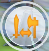
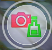
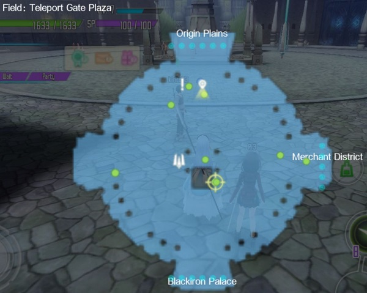

Esta página esta diseñada con el fin de que las personas de habla español y tengan el juego SAO:IF puedan encontrarse mas rapido sin necesidad de buscar en algun otro sitio, al poner tu informacion de avatar del juego y direccion IP de avatar y de gremio podras ver a los jugadores y a los gremios con su IP, tambien podras formar gupos en la página y grupos propios de los gremios para poder hablar con los jugadores sin tener que entrar al juego.
Si eres nuevo en SAO:IF y no sabes donde esta la dirección IP de otros jugadores o la tuya, aquí una breve explicacion:
Primero ve al menu y entra en comunidad
Luego entra en buscar jugador
En la esquina tendras tu IP y abajo para buscar la IP de otro jugador, lo copias y lo pegas en el formulario
Para el gremio lo mismo, pero si no tienes entonces no habra nada en lo que entrar
Si quieres crear un gremio o quieres buscar alguno, tienes que ir a distrito comercial y hablar con este NPC/PNJ (Personajes No Jugables/Non-Player Character)
Entrar en gremio/guild
Arriba para crear un gremio, en el medio para buscar y unirte a uno, y abajo para disolverlo
Si eliges buscar uno tienes que tocar buscar por ID
Y aqui escribir el ID
Aqui les dejo un link que los llevara a una pagina que lo explica
Sword Art Online: Integral Factor es un juego multijugador que se basa en la serie y manga con algunas modificasiones en la trama. Empieza en los ultimos dias de la beta con un avatar que creas tu, luego conoces a Koharu una jugadora mas que tambien formo parte de la beta, ella te pide algunos consejos para luchar en el juego, ahí es donde comienza el tutorial. Despues del tutorial basico, Koharu o como la nombres se hace tu amiga y prometen reunirse cuando SAO se lanze oficialmente, ahí es donde comienza el trama de SAO, el tutorial termina luego de aprender lo basico en el distrito comercial. Desde ahí ya puedes empezar a interactuar con otros jugadores, aunque el juego de por si esta en ingles, koreano y chino. Por esa razon creo esta pagina, para que ustedes puedan interactuar con jugadores de la misma habla sin dificultades de busqueda
Aquí les dejo el Comic Prologo de SAO:IF traducido al español por su servidor (osea yo XD). Les aconsejo aumentar el tamaño para leerlo mejor
Sword Art Online: Integral Factor se juega en mobile: Android/iOS, pero tambien hay formas de descargarlo en pc.
Aquí les dejo links de descarga para distintos dispositivos:
La jugabilidad no es tan complicada, para mover tu avatar abra una palanca tactil de joystick, un boton para golpear y otros cuatros botones de habilidad especial llamados skill records, para cambiar el angulo solo hay que deslizar la pantalla tactil. tambien habra un menu en la esquina izquierda, pero se desbloquea despues del tutorial.
Los monstruos/bestias suelen tener 2 o 3 habilidades y tambien tipos de daños. En lugares abiertos te atacaran solo si tu los atacas, pero en un calavozo/dugeon te atacaran dependiendo de la distancia en la que estes, suelen dar una señal antes de atacar. son deviles a algunas habilidades especiales/skill records o tipos de daños. Si escapas de un monstruo/bestia en mundo abierto luego de atacarlo su vida se restaura. Vencerlos da poca experiencia y algunos materiales.
Son como los monstruos/bestias en el sentido de habilidades y tipos de daño. Destacan por ser más grandes, con daños mas severos y habilidades unicas que un monstruo/bestia no tendria. El vencerlos te dara mas experiencia y materiales.
Hay variedades de armas para usar: Espada, espada de estoque, mazas, dagas, hachas, lanzas, arcos y para defenderse escudos pero solo puedes usar escudos con determinas armas. tambien hay un boton con imagenes de armas  que se utiliza para un cambio rapido, por ej: En el set 1 pones una espada simple y en el 2 un estoque cuando toques ese boton de la espada y las habilidades que tengas actualmente cambiara a la otra rapidamente.
Las armas que uses y los monstruos/bestias tienen 3 tipos de daños:
Hay muchas habilidades especiales/skill records y cada una de ellas tiene un elemento y tipo de daño especifico. Solo se consiguen al terminar algunas misiones especificas o por la tienda de a Arcana Gems. Tambien la puedes conseguir por dinero de verdad
Las habilidades especiales/skill records y los monstruos/bestias tienen un elemento especifico, esos efectos elementales son:
Entre las habilidades especiales/skill records a la izquierda hay un boton con una poción y una camara,  hay es donde puedes elegir curas de hp (barra de vida) para restaurar vida o curarte de algun efecto elemental que te halla hecho la bestia a la que enfrentas.
Para guiarte en la mision hay un mapa en la esquina que te marca el lugar de mision al
que tienes que ir

Las misiones se dividen en:
Los eventos son circunstancias especiales globales o locales con mayores tasas de caída, registros de habilidades especiales y otras alteraciones del juego en la mecánica básica de Sword Art Online: Integral Factor. Por lo general, marcan la celebración de un evento importante, como el Año Nuevo chino, el Día de San Valentín, Halloween, Hasta los cumpleaños de los personajes conocidos como Kirito, Asuna, etc. En los eventos ganas materiales y elementos de intercambio/trade con los que puedes intercambiar por meteriales
Hay dos metodos de paga:
Es posible en el piso 22 hablando con Nishida en Town of Beginnings. Para poder pescar,
el jugador debe adquirir una de las cañas de pescar disponibles y un bocado. La pesca
recompensa al jugador con un expP/Fexp (experiencia de pesca/fishing experience) y una de las
diferentes capturas posibles: un pez, equipo perdido, memoria Niter, cristal de liberación y
material de armas integrales. El pescado se puede comerciar con un comerciante.
Cuando subes un nivel, tu daño base aumenta en 1 o 2 por nivel. Cuando llegues al nivel 5, 10
o 15 podrás comprar nuevas cañas más efectivas.
Todos los peces contienen las siguientes estadísticas variables: tamaño, peso, puntuación y
puntuación alta.
Dependiendo de la vida de los peces y de la zona donde estés pescando obtendrás un expP/Fexp u otro.
Eso el basico que debes saber del juego y de la página ahora puedes Iniciar Enlace y comenzar a jugar con mas gente les deseo suerte :D
{kind=link}
{kind=link}
{kind=link}
{kind=link}
{kind=link}
{kind=link}
{kind=link}
{kind=link}
{kind=link}
{kind=link}
{kind=link}
{kind=link}
{kind=link}
{kind=link}
{kind=link}
{kind=link}
{kind=link}
{kind=link}
{kind=link}
{kind=link}
{kind=link}
{kind=link}